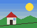

The sites to bring up plan
The web people use, each a click away, to see where the browser
stands on it today (what stops each, and the order they are taken in:
docs/plans/plan_sites.md). The ones that are applications
need their scripts: scripts=host on the command line.
GitHub discuss.ocaml.org 9fans Amazon chess.com YouTube Gmail ChatGPT
And what already runs: tinybox, the Playground's games compiled to JavaScript; Hacker News; Wikipedia.
The box model CSS 2.1
Every box on this page is a content box inside its padding, its
border and its margin. The column is max-width: 760px
with margin: auto: centred, whatever the window. This
picture floats, and the lines beside it are shortened until its
bottom.
The colours are custom properties (var(--accent)),
the header's padding a calc(), the buttons below
inline-blocks, shrunk to fit their words. The style comes from a
linked sheet, chrome.css, fetched like a picture, which
@imports its colours.
The same engine reads the pages of the web's other ages, each written as its time wrote them:
1993: HTML alone1995: Netscape's tags1996: style sheetsScripts
Before style sheets: attributes
A table as Hacker News still writes it: bgcolor=,
width=, cellpadding= -- presentational hints, read as CSS.
| Mini News new | past | comments | ask | show |
| 1. A browser that runs the page's own program (about:firefox) |
| 2. The first browsers, and what they showed (about:history) |
Flexbox
The header above is a flex row, its links pushed right by
margin-left: auto. Below, three tiles share a row by
flex: 1, 2 and 1; the last
row wraps.
Grid
Where flexbox says "these, in a row", a grid says its rows and
its columns, and each child its place. This small page is
grid-template: auto 1fr auto / 120px minmax(0, 1fr)
with named areas, as Wikipedia cuts its own: the side column is
120 wide and as high as its row, the main one has the rest.
grid-area: main, written first in the page, placed here by its name. Its column is minmax(0, 1fr): what the side leaves.light-dark(#e6f4ea, #222)Without a place, the children take the next free cell, row by
row: six in repeat(3, 1fr), the fifth sent to the
third column by grid-area: 2 / 3.
JavaScript
Since 1995 a page is also a program. This card's is run by MiniChrome's own engine -- a lexer, a parser, an interpreter -- and reaches the page through the DOM, the tree the developer tools show (F12): (if you read this, the script did not run)
0
made so far, each by document.createElement and put in
the grid below. Click a tile: its class is toggled, and the style
sheet paints it again.
More: pages that are programs, and comments folded by a script as Hacker News writes its own.
Generated content CSS 2.1
What a rule adds to an element without the page saying it:
::before and ::after, a box of their own with
the text of content. Quotation marks
,
a badge's square Community,
a list's separators, a link's address
(a link, by attr(href)),
and a tab's line, an ::after placed by its
bottom:
Web components 2016
An element of the page's own making. <name-tag>
below is given a class by customElements.define; the class
attaches a shadow tree to each one, which is what is drawn, and
the element's children show through its <slot>s. The
third has its shadow tree written in the page, in a
<template shadowrootmode>: no script made it.
SVG
Logos and icons are drawings now, not pixels: an SVG inline in the
page (Chrome's logo, three arcs and two circles), a picture whose
src is a data: URL, Hacker News' vote arrow
as a CSS background, and an icon as a mask in the page's accent
colour -- each turned into pixels by our own rasterizer.

Frames
A document inside another: an <iframe> is a box of
the page in which another page is laid out, with its own style
sheets, cut at the box's edge. Its document is its srcdoc's
text, or what its src gives. An advertisement, a video's
player, a map, a deck of slides: other sites' pieces in a page.
<iframe width="420" height="84" srcdoc="<style>body { background: #eef4ff }...">
Folded, with no script HTML5
For fifteen years a part of a page that opens on a click was a
script's work. <details> made it an element: click
the line below. What is open is an attribute the browser sets,
open, and the style sheet does the rest.
What the browser's own style sheet says of it
details:not([open]) > :not(summary) { display: none }
-- one rule, in data/css/ua.css.
And a details in a details
is found the same way: the innermost whose summary was clicked.
Pictures WebP
One picture, 64 by 48, in each format the browser reads, with the file's size. GIF and JPEG came to the web from outside. PNG (1996) was made on the net to replace GIF, and WebP (2010) by a browser's maker: a key frame of the VP8 video codec as a picture, and beside it a lossless format that knows it is compressing pixels. Each is decoded by a reader written in OCaml.
 |
||||
| GIF 429 bytes | PNG 735 | JPEG 1,379 |
WebP 640 | WebP, lossless 316 |
Sites to try
Click one, or type an address in the omnibox above. What looks mostly right today, and what each asks of the engine (what they ask the browser to remember is in about:cookies; the answers it keeps to ask less of the network are in about:cache):
- Hacker News: tables and attributes, a small script
- Wikipedia: a long article, its sheets fetched, its columns a grid
- Google: flexbox; GitHub: flexbox and icons
- Craigslist, CNN Lite, BBC News: the next ones